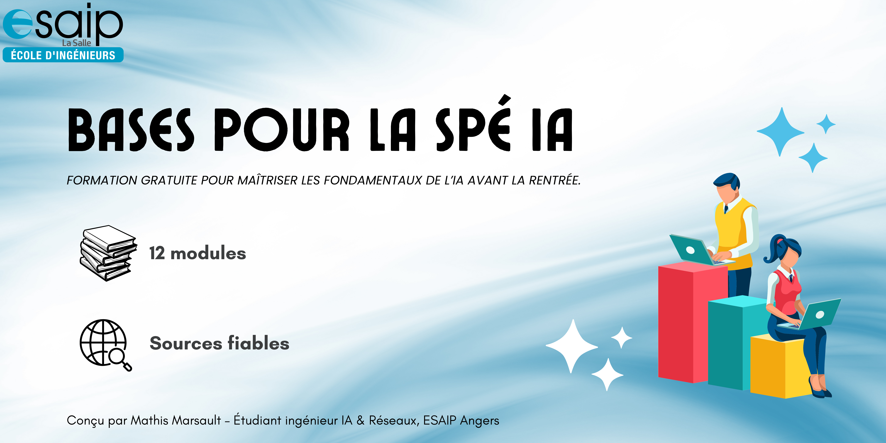

Bienvenue sur l'Outil d'Apprentissage IA de l'ESAIP

Votre parcours pour maîtriser l'Intelligence Artificielle
Cet outil a été conçu pour vous, étudiants ingénieurs en informatique et réseaux de l'ESAIP, afin de vous préparer au mieux à la nouvelle spécialité en Intelligence Artificielle.
Ce site est né d'une volonté personnelle : rendre l'intelligence artificielle plus accessible et aider le plus grand nombre d'élèves (y compris moi-même) à se préparer au mieux pour les défis passionnants de la spécialité IA à l'ESAIP.
Avertissement Important
Cet outil est un support d'apprentissage informel et complémentaire. Il a été conçu pour introduire et vulgariser les concepts clés, mais il ne remplace en aucun cas les cours officiels dispensés par les professeurs de l'ESAIP, qui restent la référence absolue.
Le contenu de chaque module a été rigoureusement élaboré en s'appuyant sur des sources académiques et documentations de référence (détaillées dans la page "Sources") pour garantir la fiabilité et la qualité des informations.
Plan du Site et Accès Rapide aux Cours
Naviguez directement vers le module de votre choix. Chaque cours est conçu pour être une introduction complète au sujet, avec des explications, des exemples et un quiz de compréhension.
-
Semestre 7 : Les Fondamentaux
-
Semestre 8-1 : Domaines d'Application
-
Semestre 8-2 : Sujets Avancés & Projet
Prolongez votre apprentissage sur YouTube !
Découvrez ma chaîne Mathis AI
En complément de cet outil, je partage sur ma chaîne YouTube des tutoriels, des explications de concepts et des projets concrets pour continuer à explorer le monde fascinant de l'intelligence artificielle.
C'est l'endroit idéal pour voir la théorie en action !
Visiter la chaîneComment utiliser ce site ?
La navigation est organisée par semestre. Chaque semestre contient les différents modules de cours que vous étudierez. Vous pouvez naviguer entre les cours en utilisant le menu supérieur.
- Explorez les modules dans l'ordre pour une progression logique.
- Testez vos connaissances avec les quiz à la fin de chaque cours.
- Utilisez cet outil comme support de référence tout au long de votre année.
Objectif du projet
L'objectif est de créer une ressource éducative complète, professionnelle et évolutive, qui pourra non seulement vous aider dans votre apprentissage mais aussi être enrichie par les futures promotions.
Prêt à commencer ? Sélectionnez un semestre dans le menu en haut de la page ou dans le plan du site pour plonger dans votre premier cours !
À propos de l'auteur
Ce site a été développé par Mathis Marsault, étudiant ingénieur à l'ESAIP.
Vous pouvez me retrouver sur LinkedIn.